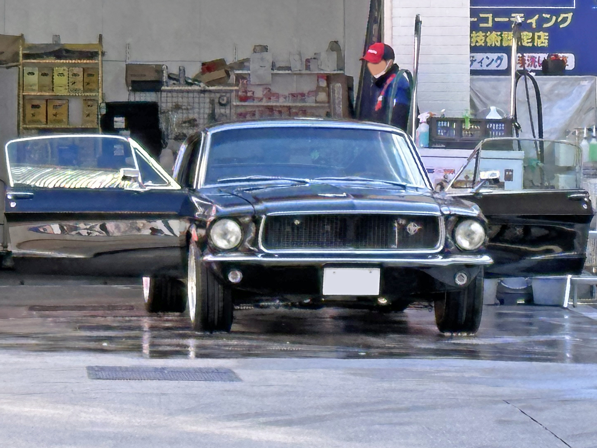
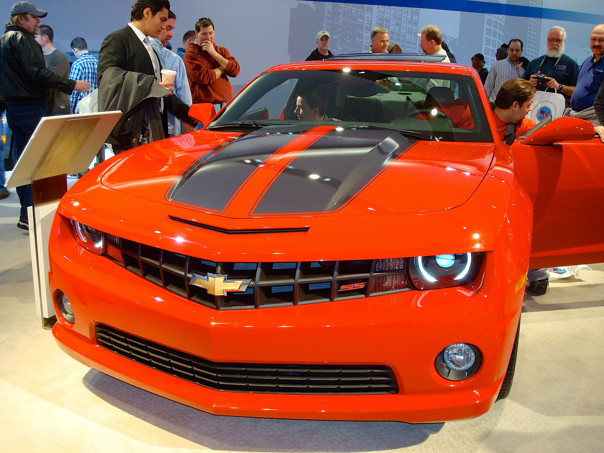
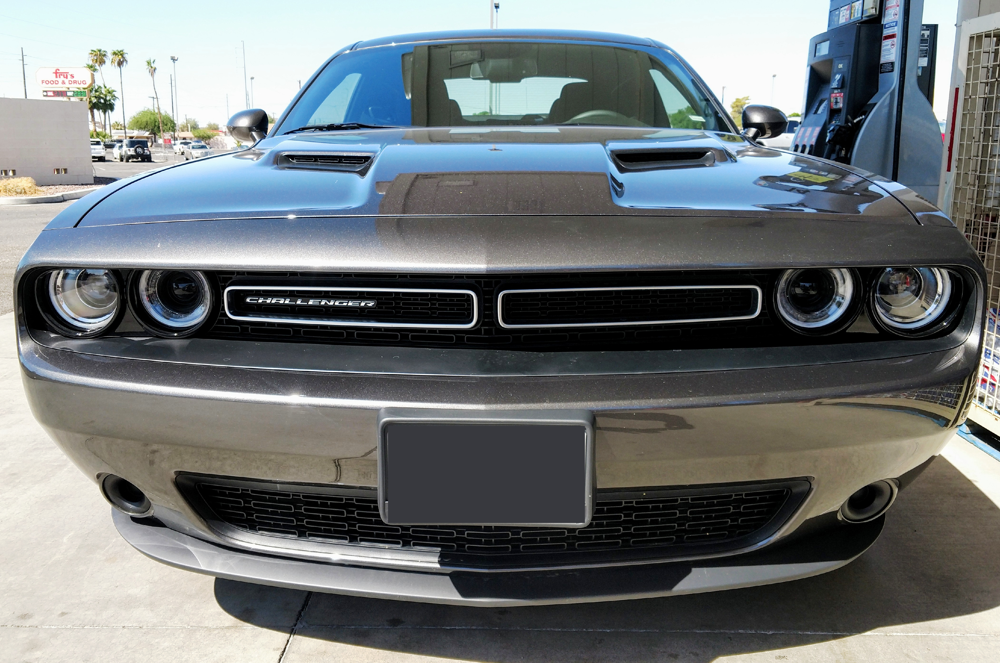
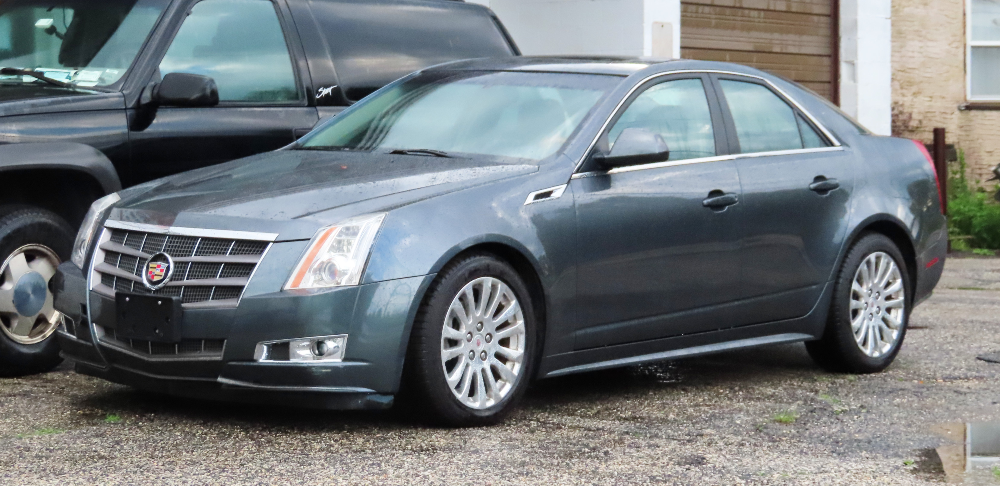

Otomobil dünyasına hoş geldin!
Amerikan otomobilleri; güçlü motorları, geniş gövdeleri ve kaslı tasarımlarıyla tanınır. Özellikle muscle car modelleriyle dikkat çeker.

Güçlü motorlar ve ikonik modeller.

Amerikan otomobil kültürünün önemli temsilcisi.

Kaslı tasarım ve yüksek motor gücü.

Lüks ve Amerikan tarzı.